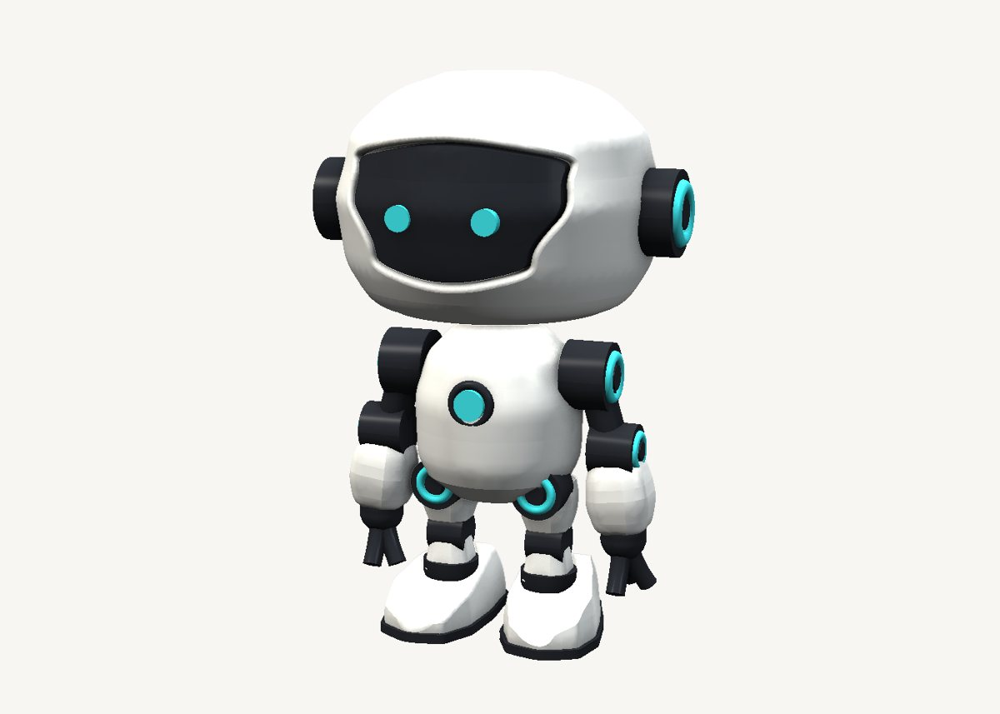
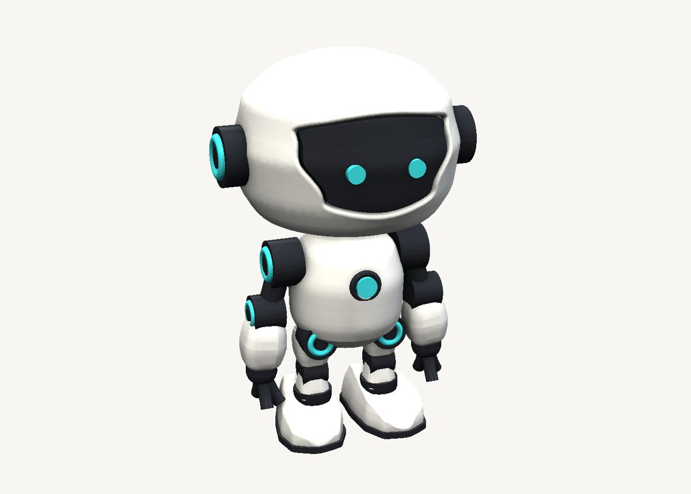

How to model a cute robot in SweeperCAD
Round shells, sneaker boots, a curved visor and glowing joint rings - and every one of them a sweep. The trick is to think of the object first, then of the sweep that makes it.
Download the model Get SweeperCAD (free)
61 objects · 100 × 83 × 148 mm · free to use, no credit needed (CC0)


How it is built
- Head and body are turned shellsA circle swept up, its silhouette drawn as the scale graph.
- A sneaker is two drawingsIts plan outline extruded up, kept inside (intersect) its side silhouette swept across its width. Add, subtract and keep: most real objects need all three.
- A visor that follows the headA slab is cut out of the head, and a dark slab is kept inside a slightly smaller copy of the dome - so the visor curves exactly with the face.
- Rings, ribs and sleevesThe glowing rings are a small circle on a circular spine - an exact torus. The ribbed neck is a cylinder with a stepped scale graph. The sleeves are rounded squares along a slightly bent spine.
Open it and pull on it
Download the model, open it with SweeperCAD and it lands on your asset shelf. Place it, then select any part: its profile, spine and scale graph are right there to drag, and everything downstream rebuilds - fillets included. Every curve stays editable; nothing is ever baked.
More examples
Teapot Nautilus shell Mecha arm Potted plant Elliptic-wing fighter · the whole library